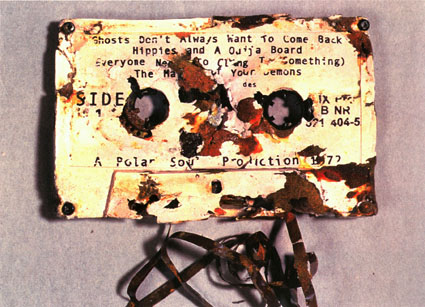
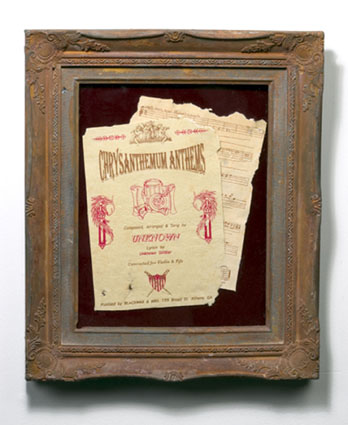
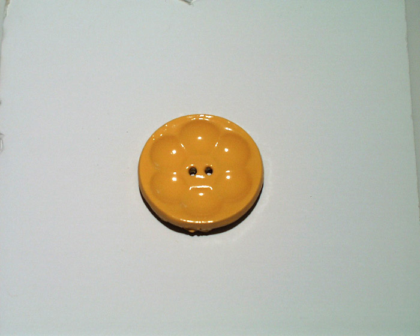

|
 |
|
||
 |
|
|||
 |
|
|||
 |
|
|||
 |
|
|||
 |
|
|||
| |
|
|||
 |
|
|||
 |
|
|
||
| |
|
|||
 |  |
|
||
 |
|
|||
 |
|
|||
|
|
|
|
|
|

Conceptual artist Dario Robleto's work is a veritable mixtape of humanity, and sometimes he even makes mixtapes (and a plethora of other objects) using human bones. It is in the recycling and recombination of material that Robleto finds real newness and hope for a civilization still dealing with the devestation (and the amazing innovations) of the 20th century as it enters the ever uncertain territory of the 21st. When he remixes materials and histories--much like the hip-hop DJ from whom he takes both literal and philosophical cues--his work finds in the old and forgotten a wellspring for new associations, reflecting back our own concepts of these old things and giving us new possibilities for imagining the future.
Robleto's recent exhibitions include solo shows at the Whitney Museum of American Art at Altria, New York, NY; Museum of Contemporary Art, San Diego/Downtown; and the Contemporary Arts Museum,Houston, TX. He lives and works in San Antonio.
Robleto came to Cambridge in 2004
to give a lecture at Harvard's Carpenter Center. Afterwards he spoke with
Present! (ap)
Q: Your work is grounded in actual historical events but tends to have a fictive quality which seems linked to your interest in magic. What is the relationship between truth and fiction in your work?
A: I believe in a magic that’s possible. I think there’s something much more encompassing for everyone if they believe in a magic that is attainable rather than the form of magic that we grow up with as children. I’m interested in magic in relation to alchemy. The alchemist believed they were going to succeed in what they were doing and that’s the key to what I’m doing too. My works often fall in this area between truth and fiction because the materials or what I have done with them seem so unbelievable at first glance. I like working in this in between region because the viewer has to take a stance. Either you believe me, you come with me, or you don’t and either way is valid. To raise the issue of truth in artwork is such a valid thing to do right now, especially in 2004, with the whole issue of faith and how it’s manipulating politics all over the world. Truth gets muddied. I’m aware of that and trying to force it out, but I also acknowledge the viewer’s participation and the fact that they can fill in the blanks. But bottom line, in my work I would NEVER say or do something I didn’t really do. I find lying completely boring and part of a postmodern, ironic, cynical, apolitical stance I adamantly oppose. To really do and mean what you say is where it gets interesting. I stated this once before but what does it say of a culture where to be sincere has become the radical gesture?
Q: Many of your pieces address specific, personal histories which become collective through your use of materials, for example, with the bullet that is made from pieces of bullets from each American war. Can you discuss the importance of this universality?
A: I don’t think enough artists think about their viewer anymore. Even in the past decade, there has been this confrontation with the viewer. There is this new gothic sensibility. To me, working like that is confrontational in a negative way. It doesn’t allow the viewer to have a door in and I always want a door in for my viewer, although some people have mentioned that there is so much information in my work sometimes that it becomes an impediment. The way I see it, “It’s there if you want it.” If you spend the time digging through these layers I promise to make it an interesting endeavor. I leave a lot up to the viewer at that point. I am assuming my viewers are smart and actually want to engage. This not a stance I think most art takes to its viewers. The idea of universality is in my work in that I’m super- conscious of the viewer’s participation and that everyone can in a sense be a walking jukebox. I hope my artworks put a coin in everyone and ignites some personal soundtrack whether through a song reference or a material we can all identify with. The works are not about me but about all our histories and how they find their way into objects.

At
War With The Entropy Of Nature/Ghosts Don't Always Want To Come Back,
2002.
Cassette: carved bone & bone dust from every bone in the body, trinitite
(glass produced during the first atomic test explosion at Trinity test
site circa 1945, when heat from blast melted surrounding sand), metal
screws, rust, letraset; audio tape: an original composition of military
drum marches, weapon fire, and soldiers' voices from battlefields of various
wars made from Electronic Voice Phenomena recordings (voices and sounds
of the dead or past, detected through magnetic audio tape)
Q: Do you find that your ideas change according to the materials you are able to acquire?
A: So far to date, amazingly, there’s never been a material that I haven’t somehow been able to track down. It’s a really strange process because - swamp root, cramp bark, white willow - it just has to sound right. It has to work on the page first. The chain of reasoning will often lead me to find things I hadn’t thought of before like the trinitite glass led me to other forms of really strange glass. Certain meteorites have led me to extraterrestrial lava. Some asteroids are large enough that they produce some internal heat which produces an active lava system. If they’re not big enough to form a legitimate atmosphere, when those volcanoes erupt, it just spews out into space, there’s nothing to hold it back and it can eventually find its way onto earth. It’s lava from another world! I couldn’t even imagine that such a thing existed until I had done the research on other things. “Extraterrestrial lava”, the way those syllables work next to each other has to satisfy me as much as the material itself. That’s where it just becomes poetry. I’m choosing the next material based on language, totally on language. I think about what I would write next at this point and not about whether I can get the material.
I get worried when I start these pieces because some of the materials I use need to be dealt with so delicately. I hate shock factors in art or gross kinds of work. So far, no one’s come up to me and been insulted by the materials, so I think that’s a good sign that I’ve handled them well. But it moves you, because as I mentioned, turning to dust in poetry is one thing, but really turning to dust in front of you is another thing. It moves me because I have to earn the respect of the material.
Q: Where does your interest in DJ culture stem from?
A: Music has always been a constant in my life; the DJ thing specifically. I know exactly when that happened. In 1996, I realized that I could start to investigate this sculpturally. There was so little intellectual or conceptual literature being written about the burgeoning DJ culture. It was an open field. The only things that were out at the time were interviews with the DJs themselves in ‘zines or specialty DJ magazines. I would eat up anything I could find because I was so eager to read about the culture in a more critical way. Now the vacuum has been filled. There’s tons of critical discourse out there. Drum-n-bass was the thing that I was most into; this really dark hardcore drum-n-bass. I remember that every DJ would talk about their work in architectural or sculptural terms. I was so curious why that was what they were using to describe their sounds. Goldie, who had no musical training would walk into the studio and say ‘I need a drum beat that sounds like a rattlesnake moving through a tin coil pipe.’ Or others talking about a drum beat mimicking modernist architecture, housing projects, repetition and the brutality of these brick buildings over and over. Across the board everyone was talking like that and it started to hit me that there’s something about this musical form that really has a material dimension. There’s another DJ who I’m fascinated with called Dillinja. He would refer to himself as a bassologist. I really love this idea of the science of bass frequencies. He was always trying to make bass frequencies that would be rupturing inside your body. He understood his music-making habit’s influence on the body. Everywhere I looked there was some relationship between sound and material. I realized I would never be a good DJ, but there was a lot of potential to explore its material possibilities and how music and materials mutate back and forth. In 1996, I made that shift and my first vinyl works occur shortly after that.

Chrysanthemum
Anthems, 2004
11 x 18 inches
Homemade paper (pulp made from a poem a WWI soldier wrote while recovering
in the hospital, dried and crushed chrysanthemum petals, crushed blood
root, bugleweed, sweet balsam, rose water, rose oil, peppermint oil, sunflower
oil, dandelion oil, aloe juice, cotton), melted shrapnel and bullet lead,
cold cast steel and brass, polyester resin, rust, bone glue, typeset Original
score for violin and fife composed for soldier's poem Score assistance
by Justin Boyd
Q: Do you consider your sculptures as having musical parallels?
A: I would definitely argue that I am making music. A musician or someone really grounded in music may not think so, but that‘s what DJ culture and the avant-garde tradition, with Cage and Stockhausen, opened the door to. The techniques of a DJ - spinning, splicing, scratching song selection and sequencing – are things that make you a good DJ technically. I simply transfer them over to materials. That’s part of why I would argue that I’m making music. I don’t expect music to be only an audible experience, and there’s a tradition of that in music. I think I’m in that trajectory of music making. For example, in Our Sin Was In Our Hips, my mother’s and father’s hips are igniting some kind of music in the room. Even with the pieces that have specific references, like Patsy Cline, I like to believe that if ten people are in the room, they’re all playing the song in their heads and there are ten different songs playing at different moments, which is how a DJ would overlap things. But it’s all personalized. There’s an empty room in a sense, but it’s booming with music if you consider the internalized soundtracks that the viewers are playing in their heads. I would argue that I’m making music in that way.
Q: How do you make your decision about whether to use actual sounds or to refer to sounds using physical objects?
A: I think to date there are three works that have an actual soundtrack, and one of them was in the Whitney Biennial; Vatican Radio. That sound was so important. It’s a piece by piece decision because some things are more powerful in your imagination. For example, I did a piece with an EVP recording (Electronic Voice Phenomena: voices and sounds of the dead or past, detected through magnetic audio tape) of a ghost humming a lullaby in Gettysburg on a reenactment date. Why would a ghost, a female ghost, be humming a lullaby on Gettysburg on a day when modern man is playing war? Knowing the tradition of black and white women during the civil war, the role of a lullaby in black oral tradition, the men that were lost and the women left with the children at home, the sound could have one meaning through a white perspective and a totally different one through a black perspective. To me the decision was to just leave it wide open for interpretation. However, the Vatican radio piece is so much more directed to a point. That sound was the Secretary of Defense calling out the first draft lottery numbers of World War II. It was this amazing moment in American radio history. The whole country was tuned in that night because everyone wanted to hear if their son or husband or brother was going to be called that night. Hearing it today, with what’s going on, has so much more impact than leaving that up to the imagination. So that piece called for a different strategy. It could be so many different criteria that make me decide, but to date, the majority of my pieces have been leaving it up to the imagination of the viewer.
Q: In your pieces, you have referred to sounds that are outside our personal memories. What is the relationship between sound and memory, or created memory, in your work?
A: The EVP thing is so interesting to me because it opens the door to sounds before recording technology was developed. My philosophy of sampling and how it relates to history are so wrapped up in this question. I am interested in collective memories through sound, like with the Gettysburg ghost. American history, to me, is all wrapped up in that one lullaby because of the variety of interpretations. That I could pluck it out of that ether and put it here today and let us meditate on it now is one of the beauties of sampling to me. One of the most beautiful and radical things about sampling is its’ open door policy to cultural memory. That conversations can take place through time. That history doesn’t have to be a dead weight, always written by others, weighing on our backs. Stirring these memories with sound is one of the most powerful associations we can experience.
Q: Can you talk about the role of music as a political vehicle?
A: It’s been great that in the past year we’ve actually seen some resurgence of that tradition, of the singer-songwriter protesting. I’ve always been envious of another generation’s relationship to music, where so much could be riding on your musical decisions. I want my decisions to matter like that. I want to buy so-and-so’s record because it’s some kind of remark against something. But times change and ideas change, and one of the big criticisms towards this generation is that we’re apolitical, ahistorical, we have no real sense of history, and the danger is that we’re going to be dismissed wholeheartedly one day, if we haven’t been already, as being an active generation that didn’t change anything. That’s why another huge point about sampling is that it offers a way out of that. As I’ve remarked in another essay, there’s no such thing as a good DJ who’s historically ignorant. If you don’t know what the politics were of the moment that produced that sound, and so, politics transforming into certain sounds, then why would you take that sound and put it next to this sound. If you don’t know the history, you’re just making a jumbled mess. So sampling actually offers a way out of the criticism of this generation because sampling insists that you know your history. That you actually engage with it. That’s why I’m so compelled to know my history.

from
Sometimes Billie Is All That Keeps Me Together, 1998
Shirt, buttons made from melted and recast Billie Holiday Vinyl Records
and acrylic spray paint
Dimensions variable
Q: You talked about sampling as a healing gesture. How does this play out in your work and how do you see it affecting the world-at-large?
A: I definitely want to contribute to these ideas of healing, sampling, and people reinvestigating its political and critical possibilities. Sampling allows us to go back in time. I’m mesmerized by these recordings, like Natalie Cole singing a duet with her dead father or the remaining Beatles filling in the blanks of John’s voice since he’s long gone. Sampling allows these weird things to happen, that are real and that count now. They are real new creations, but the past is loaded in them. The technology is so accurate that it sounds like Nat King Cole, Natalie’s father, is singing in the same room with her and a contemporary listener who doesn’t know that history would not know otherwise, so it’s real in a sense. The healing thing is where I merge this knowledge of history. Like when I pluck those bullets through time, they’re such a precious object that I better know what I’m talking about or else it’s a huge disrespect, in my opinion, to its history. But in 2004, with what we know now and with the benefit of the hindsight of history, can I pluck something up to this moment and contribute to its healing today? I want to heal back through time and this is still the metaphor I’m trying to push out. Can I heal through time? Does art have the power to fix something that never got fixed, to correct a wrong that’s never been resolved? “What can art do anymore?” is what I ponder everyday. What can it really do? So as artists, what if you walk into your studio everyday and say “today I’m going to make something that works,” what if you just make that little shift in your head when you walk in the studio. These are the problems that I’m setting up right now.
Q: Although you try to close chapters and resolve events in the past, your work also seems so hopeful for the future.
A: To be hopeful is always a forward looking activity. I just truly believe that by looking to the past we can get to the future on better terms. I’m glad you get it because the work I showed yesterday definitely had dark undertones, but that was only one fragment of my work. Hope is everywhere in my belief and I hope that comes through because I’m not a pessimistic person. I want to stress the point that my work is ultimately about hope. It’s about acknowledging the horror of the past and the present but suggesting that we’re not powerless against it. We can be proactive about changing things, and that’s where the hope comes in. The fact that you would even think that you could change something is a hopeful act.
Interview by Bea Camacho